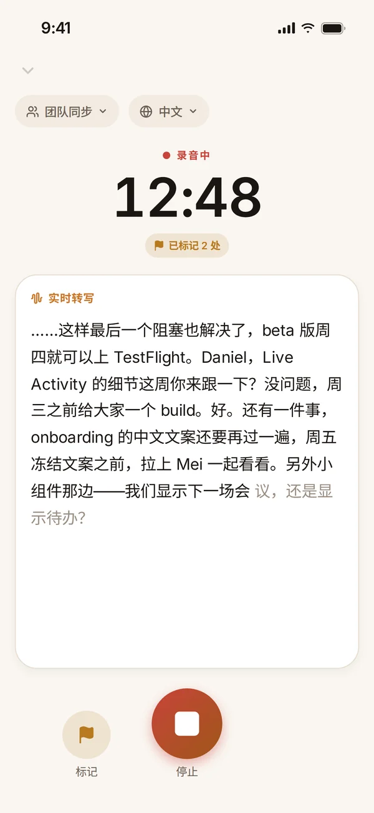
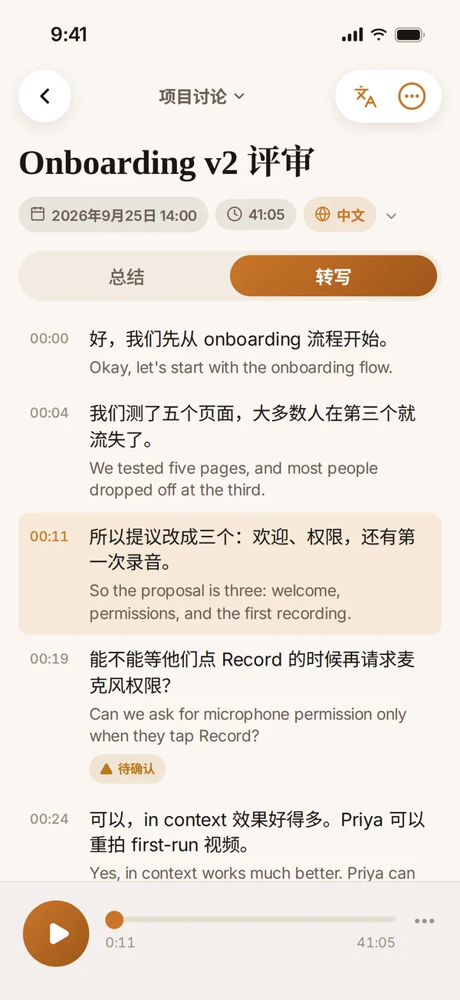
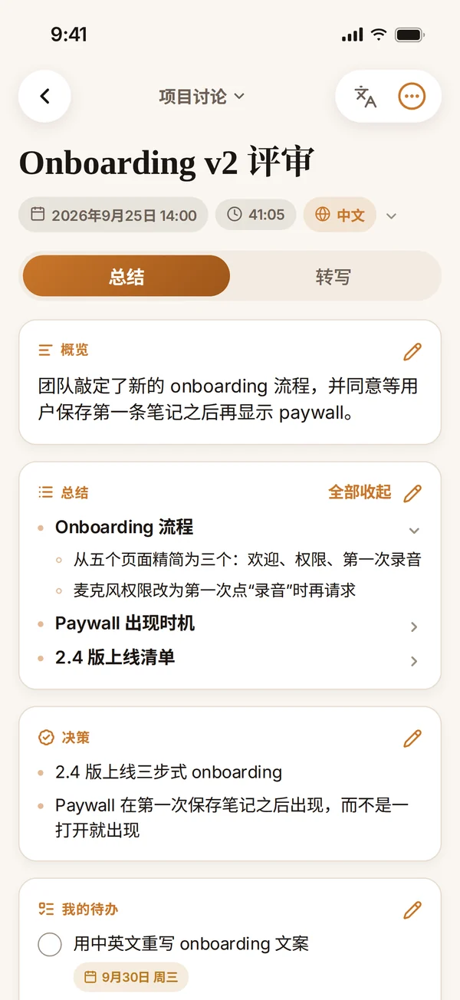
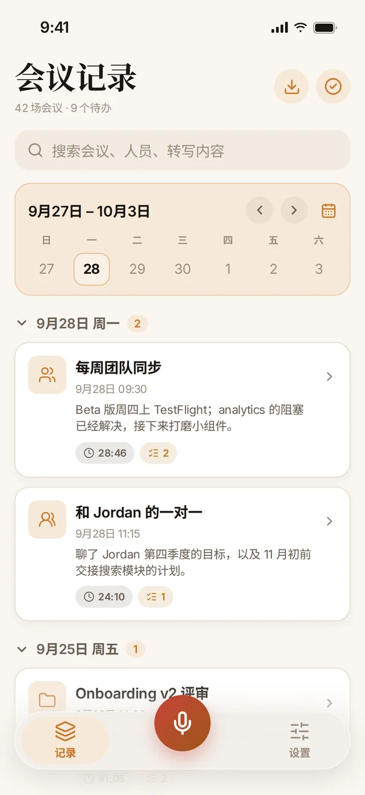
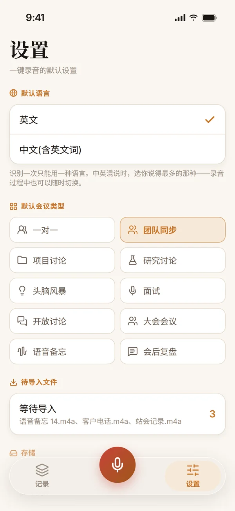

效率
会记
每一场会议，
都私密地记住。
录音、转写、总结，一个字都不上传云端。会记 把一小时的讨论整理成决策、待办和未决问题——中文、英文，或中英混说都可以；任何一场会议还能逐句对照翻译。
即将上线
隐私



功能亮点
专注一件事，
把它做好。
01录音
点一下，就开始记。
点一下麦克风就直接开始录音，按你的默认设置来，不用先填表。说话的同时文字稿就出现了；会议中途也能改会议类型或语言，重要时刻点“标记”留个记号。
- 从 App、iPhone 操作按钮或 Apple Watch 开始录音
- 实时活动把计时显示在锁定屏幕上
- iPhone 不在身边时，Apple Watch 会自己录，稍后再把录音交给 iPhone
- 英文或中文识别，录音中途可以切换
02总结
一小时的会，一屏看完。
一停止录音，iPhone 上的模型就写出概览、讨论过的话题、做出的决策、你的待办和别人的待办，以及还没解决的问题。重点放在哪里，取决于这是什么类型的会议。
- 十种会议类型：从一对一、团队同步，到面试和会后复盘
- 话题可以展开看细节，每个部分都能编辑
- 在总结里直接勾掉待办
- 有 Apple Intelligence 时用它来写；没有时自动换成内置方法，不会白录
03转写
每一句，两种语言。
文字稿带时间戳，和录音同步播放——点任意一句就跳到那里。打开翻译，每一句下面都会出现对应的中文或英文，翻译在你的 iPhone 上完成。
- 识别得没把握的句子会标上“待确认”
- 去掉长时间的静音，或在任意一句把录音拆成两场会议
- 选错了语言？换另一种语言重新转写
- 任何会议都能导出为 Markdown

04记录
能搜索的会议记忆。
会议按天分组，上面是一周日历。可以搜索标题、人名和文字稿，属于你的未完成待办也都集中在一处。
- 每张卡片显示概览、时长和你还没完成的待办
- 从日历跳到任意一周或任意一个月
- 多选会议，合并成一场，或一起导出

05设置
设一次，之后只管点。
选好你最常说的语言和最常录的会议类型，之后每次点麦克风都会用它们。从语音备忘录或“文件”App 分享过来的录音，会先在收件箱里等你导入。
- 导入的录音保留真实的录制日期
- 自动删除旧录音来释放空间——文字稿和总结永远保留
- 自动备份到“文件”App：一份能直接阅读、也能完整恢复的 Markdown 文件
把操作按钮变成录音键
把会记的快捷指令设到 iPhone 或 Apple Watch Ultra 的操作按钮上：按一下开始录音，再按一下停止。
用日历里的名字命名
允许访问日历后，录音会自动用当时那场日程的名字——“每周一对一”，而不是“录音 14”。会记只读取日历，从不写入。
数据不出设备
录音、文字稿、总结和翻译都只在你的 iPhone 和配对的 Apple Watch 上。没有账号，也没有会记的服务器——这是第一原则，而不是一个开关。
详细信息
- 类别
- 效率
- 系统要求
- 本地转写与总结需要 iOS 26 或更高版本。
- 开发者
- 4M Studio
- 网站语言
- English · 中文
4M Studio 的更多应用